<meta charset="utf-8">
<title>Global — İç Mekân Tasarım ve Ahşap Mobilya Kataloğu</title>
<link rel="stylesheet" href="base.css">

<!-- ══════════ 01 · KAPAK ══════════ -->
<section class="page cover white"><div class="pad">
  <div class="ruleline">
    <div class="rule"></div>
    <div class="mark">GLOBAL</div>
    <div class="rule"></div>
  </div>

  <div class="ctitle">
    <div class="kicker" style="margin-bottom:7mm">İç Mekân Kataloğu · 2026</div>
    <div class="dt" style="letter-spacing:-.045em;font-size:52pt;line-height:.9">
      <span class="g">Ahşap</span><span style="color:var(--ink)">Mobilya</span>
    </div>
    <div class="cband"><i></i><span>İç Mekân Tasarım</span><i></i></div>
  </div>

  <div class="cstrip">
    <div style="display:grid;grid-template-columns:1fr 1fr 2fr;gap:4mm">
      <figure style="height:80mm">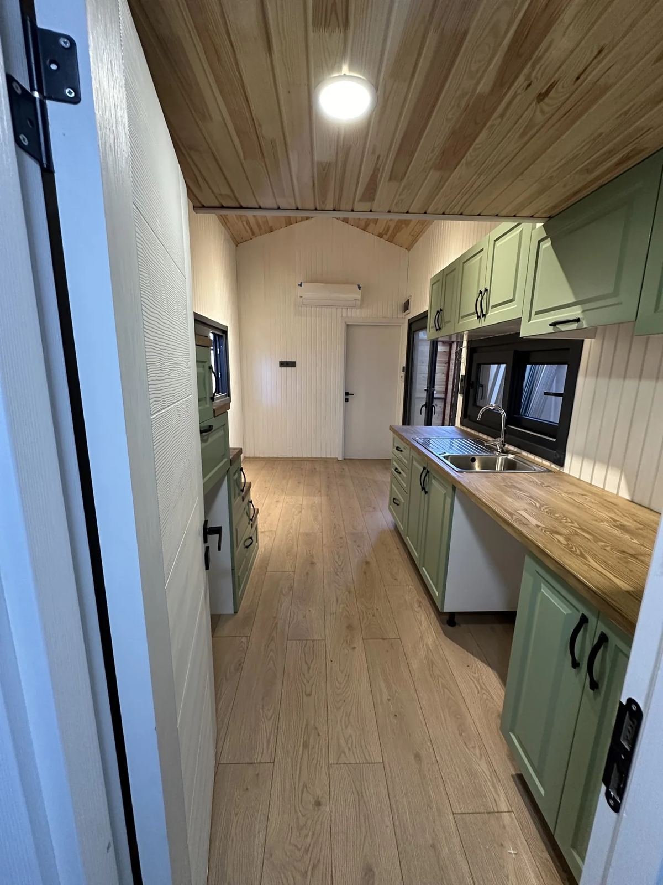</figure>
      <figure style="height:80mm">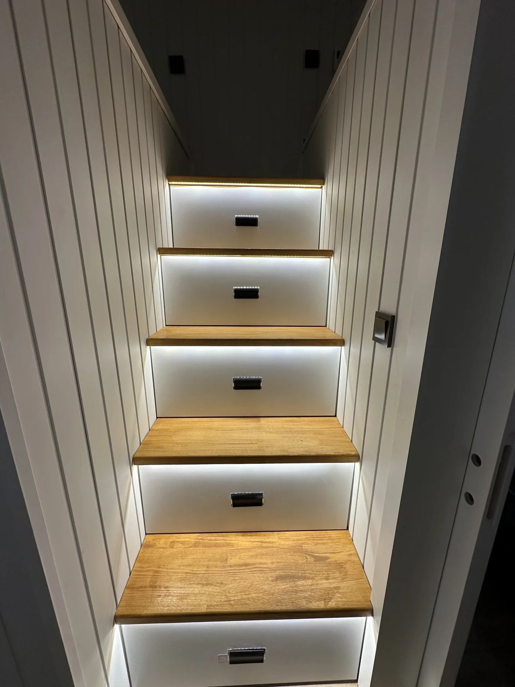</figure>
      <figure style="height:80mm">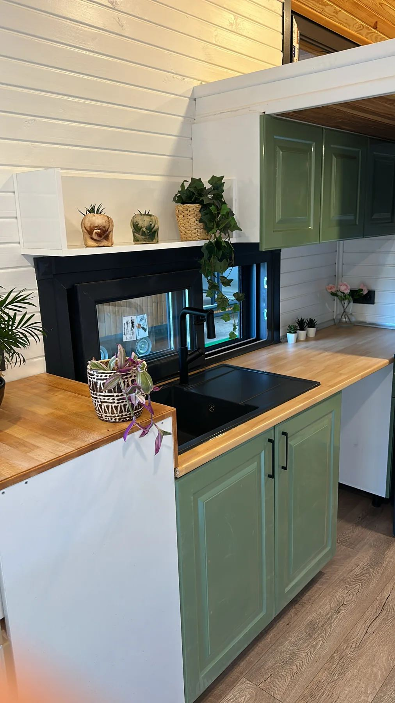</figure>
    </div>
    <div class="cfoot">
      <span>Global Yapı Geliştirme A.Ş.</span>
      <span>globalyapicelik.net</span>
    </div>
  </div>
</div></section>

<!-- ══════════ 02 · İÇİNDEKİLER ══════════ -->
<section class="page white"><div class="pad" style="display:grid;grid-template-columns:12mm 1fr 1fr;gap:9mm">
  <div style="border-right:1px solid var(--line);display:flex;align-items:center;justify-content:center">
    <div class="vert">İçindekiler</div>
  </div>

  <div style="display:flex;flex-direction:column;justify-content:center">
    <div class="kicker">Bu katalog</div>
    <div class="dt stack sm" style="margin-top:4mm"><span class="g">Ölçüye</span><span class="s">Özel</span></div>
    <div class="hr ink"></div>
    <p>
      Hazır mobilya mekânın ölçüsüne uymadığında ya boşluk kalır ya da bir şeyden
      vazgeçilir. Ölçüye özel üretimde bu sorun yoktur: dolap tavana kadar çıkar,
      tezgâh duvara tam oturur, köşeler değerlendirilir.
    </p>
    <p>
      Bu katalogda mutfak, gardırop ve depolama çözümlerimizi; otel, ofis ve
      iş yeri projelerindeki üretimimizi, malzeme yaklaşımımızı ve çalışma
      sürecimizi bulacaksınız.
    </p>
    <div style="margin-top:6mm">
      <figure style="height:56mm">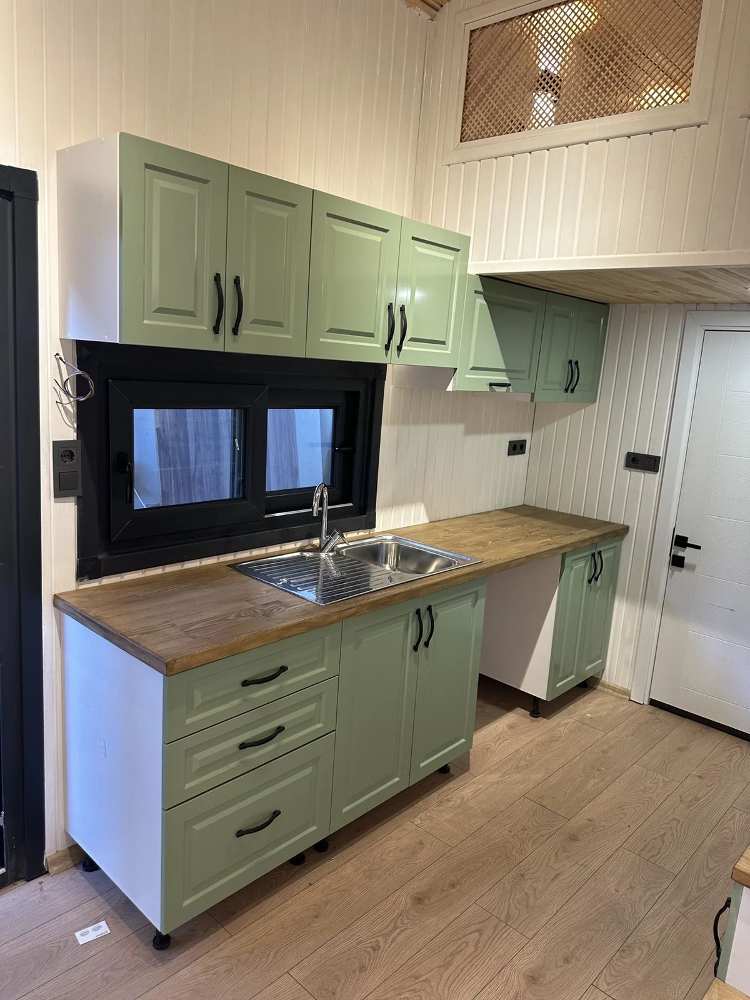</figure>
      <div class="cap">Mutfak · renkli kapak ve ahşap tezgâh birlikteliği</div>
    </div>
  </div>

  <div style="display:flex;flex-direction:column;justify-content:center">
    <table>
      <tr><td class="k" style="width:16%">01</td><td>Kapak</td></tr>
      <tr><td class="k">02</td><td>İçindekiler</td></tr>
      <tr><td class="k">03</td><td>Yaklaşımımız</td></tr>
      <tr><td class="k">04</td><td>Hizmetlerimiz</td></tr>
      <tr><td class="k">05</td><td>Mutfak</td></tr>
      <tr><td class="k">06</td><td>Gardırop ve Depolama</td></tr>
      <tr><td class="k">07</td><td>Otel Mobilyası</td></tr>
      <tr><td class="k">08</td><td>Ofis ve İş Yeri</td></tr>
      <tr><td class="k">09</td><td>Malzeme ve Süreç</td></tr>
      <tr><td class="k">10</td><td>İletişim</td></tr>
    </table>
    <div class="blk" style="margin-top:8mm">
      <div class="kicker">Ahşap işçiliği</div>
      <p style="margin:2mm 0 0;font-size:8.4pt">
        Gövdeden kapağa, tezgâhtan raf detayına kadar üretim kendi atölyemizde
        yapılır. Ölçü alan ekiple montaj yapan ekip aynıdır.
      </p>
    </div>
  </div>
  <div class="pf" style="left:39mm"><span>Ahşap Mobilya</span><span>02</span></div>
</div></section>

<!-- ══════════ 03 · YAKLAŞIMIMIZ ══════════ -->
<section class="page white"><div class="pad">
  <div style="display:grid;grid-template-columns:1fr 1fr;gap:10mm;align-items:start">
    <div>
      <div class="dt stack"><span class="g">Bizim</span><span class="s">Yaklaşımımız</span></div>
    </div>
    <p style="padding-top:3mm">
      İç mekân tasarımı mobilya seçmekle başlamaz. Önce mekânın nasıl
      kullanıldığını anlarız; mobilya bu cevabın sonucudur.
    </p>
  </div>

  <div class="hr"></div>

  <div class="split-l" style="margin-top:2mm">
    <div>
      <div class="sub">Önce kullanım, sonra mobilya</div>
      <p>
        Bir mutfakta kaç kişi aynı anda çalışıyor, bir gardıropta ne saklanıyor,
        bir ofiste ekip nasıl oturuyor — bunlar netleşmeden ölçü almak erken olur.
        Yerleşimi bu sorularla kurar, mobilyayı ardından tasarlarız.
      </p>
      <div class="sub" style="margin-top:5mm">Ahşabın dili</div>
      <p>
        Ahşap, doğru kullanıldığında mekânı ısıtan tek malzemedir. Masif detay,
        kaplama yüzey ve lake kapağı bir arada kullanıyor; dokuyu nerede
        göstereceğimize mekânın ışığına göre karar veriyoruz.
      </p>
      <div class="sub" style="margin-top:5mm">Detayda biten iş</div>
      <p>
        Kalite kapak arasındaki boşlukta, çekmecenin kapanışında ve fitil
        detayında görünür. Frenli menteşe, tam açılım ray ve ayarlanabilir ayak
        sistemi standart kullandığımız donanımdır.
      </p>
    </div>
    <div>
      <figure style="height:78mm">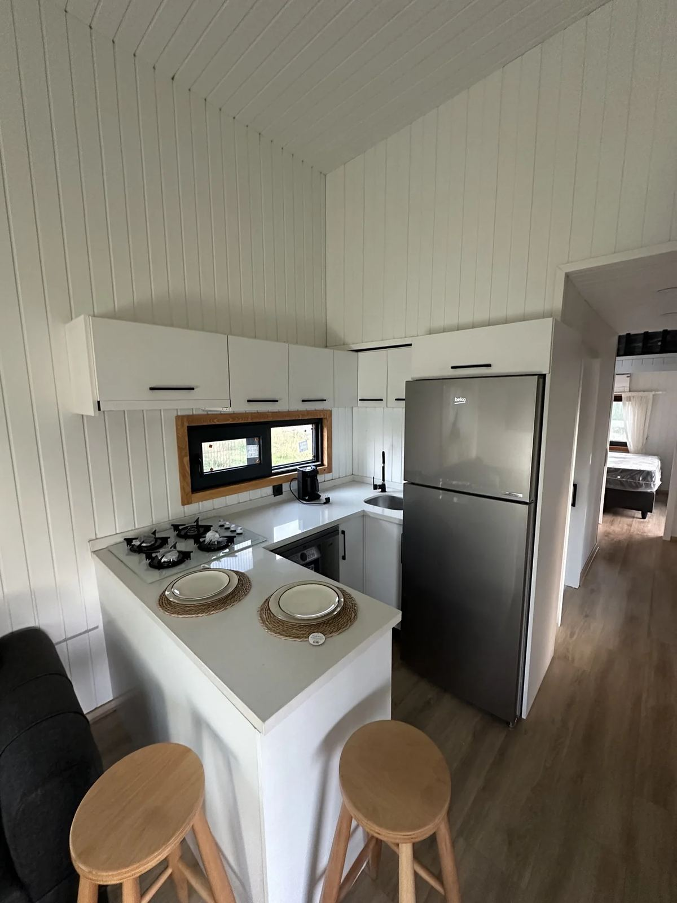</figure>
      <div class="cap">Ada tezgâh ve oturma birimi çözümü</div>
      <div class="blk-d" style="margin-top:5mm">
        <div class="kicker" style="color:var(--tan)">Yaklaşımımız</div>
        <p style="margin:2.5mm 0 0;font-size:8.4pt;line-height:1.6">
          “İyi mobilya fark edilmez; mekânda bir şeyin eksik olmadığını
          hissedersiniz, sebebini aramazsınız.”
        </p>
      </div>
    </div>
  </div>
  <div class="pf"><span>Yaklaşımımız</span><span>03</span></div>
</div></section>

<!-- ══════════ 04 · HİZMETLER ══════════ -->
<section class="page tan"><div class="pad">
  <div class="split" style="align-items:start">
    <div>
      <div class="g2" style="gap:5mm">
        <div class="sbox"><div class="no">01</div>
          <div><h3>Mutfak</h3><p>Dolap, tezgâh, ada ve depolama çözümleri. Ölçü alımından montaja tek elden.</p></div></div>
        <div class="sbox"><div class="no">02</div>
          <div><h3>Gardırop &amp; Depolama</h3><p>Yürüme dolabı, vestiyer, TV ünitesi, kitaplık ve duvar panelleri.</p></div></div>
      </div>
      <div class="g2" style="gap:5mm;margin-top:5mm">
        <div class="sbox"><div class="no">03</div>
          <div><h3>Otel Mobilyası</h3><p>Oda takımı, gardırop, minibar ünitesi, lobi ve restoran mobilyası.</p></div></div>
        <div class="sbox"><div class="no">04</div>
          <div><h3>Ofis &amp; İş Yeri</h3><p>Çalışma masası, toplantı alanı, mağaza tezgâhı ve raf sistemleri.</p></div></div>
      </div>
    </div>

    <div style="padding-top:2mm">
      <div class="kicker">Hizmetlerimiz</div>
      <div class="dt stack" style="margin-top:3mm"><span class="g">Neler</span><span class="s">Yapıyoruz</span></div>
      <div class="hr ink"></div>
      <p style="margin-top:4mm">
        Mobilya üretimi tek başına verilebilen bir hizmettir; ev mutfağından otel
        odası takımına kadar yapı işi olmadan da çalışıyoruz. İsterseniz iç mekân
        tasarımını da üstlenir, yerleşim ve malzeme kararlarını birlikte alırız.
      </p>
      <ul class="ls" style="margin-top:2mm">
        <li>Yerinde ölçü ve ihtiyaç görüşmesi</li>
        <li>Yerleşim çizimi ve malzeme seçimi</li>
        <li>Atölyede üretim</li>
        <li>Nakliye ve yerinde montaj</li>
      </ul>
    </div>
  </div>

  <div class="blk-w" style="margin-top:8mm">
    <div class="kicker">Ölçüye özel ne kazandırır</div>
    <div class="g3" style="margin-top:4mm;gap:7mm">
      <div class="numrow" style="margin-bottom:0">
        <div class="numbox">01</div>
        <div><h3>Kayıp alan kalmaz</h3><p>Dolap tavana kadar çıkar; köşe ve niş boşlukları depolamaya dönüşür.</p></div>
      </div>
      <div class="numrow" style="margin-bottom:0">
        <div class="numbox">02</div>
        <div><h3>Bütünlük</h3><p>Mutfak, banyo ve gardırop aynı malzeme ve renk dilinde üretilir.</p></div>
      </div>
      <div class="numrow" style="margin-bottom:0">
        <div class="numbox">03</div>
        <div><h3>Sonradan eklenebilir</h3><p>Proje kayıtları saklanır; aynı malzemeyle ilave üretim yapılabilir.</p></div>
      </div>
    </div>
  </div>
  <div class="pf"><span>Hizmetlerimiz</span><span>04</span></div>
</div></section>

<!-- ══════════ 05 · MUTFAK ══════════ -->
<section class="page white"><div class="pad">
  <div style="display:grid;grid-template-columns:1fr 1fr;gap:10mm;align-items:start">
    <div>
      <div class="kicker">Ürün 01</div>
      <div class="dt stack" style="margin-top:3mm"><span class="g">Ölçüye Özel</span><span class="s">Mutfak</span></div>
    </div>
    <p style="padding-top:8mm">
      Mutfak, evin en çok kullanılan ve en çok detay isteyen mekânıdır. Tezgâh
      yüksekliğinden çekmece bölmesine kadar her ölçü, o mutfakta kimin nasıl
      çalıştığına göre belirlenir.
    </p>
  </div>

  <div class="hr"></div>

  <div class="g2" style="gap:5mm">
    <div><figure style="height:66mm"></figure>
      <div class="cap">Ölçüye özel dolap ve ahşap tezgâh</div></div>
    <div><figure style="height:66mm"></figure>
      <div class="cap">Dar mutfakta çift sıra yerleşim</div></div>
  </div>

  <div class="g3" style="margin-top:5mm;gap:5mm">
    <div><figure style="height:42mm"></figure><div class="cap">Renkli kapak</div></div>
    <div><figure style="height:42mm"></figure><div class="cap">Ada tezgâh</div></div>
    <div><figure style="height:42mm">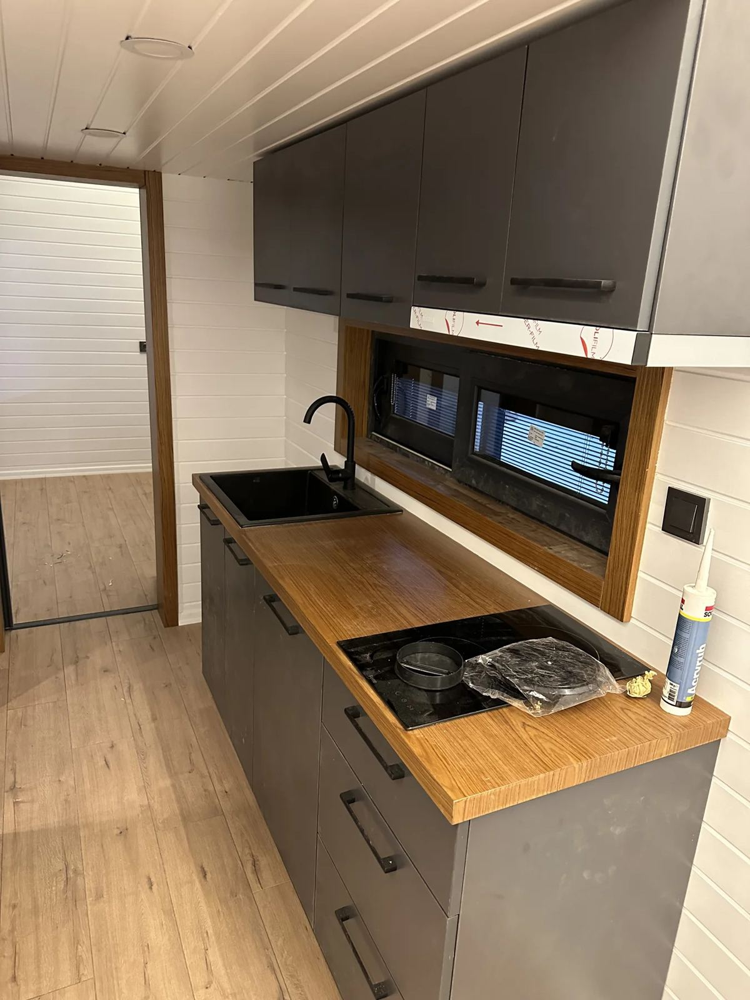</figure><div class="cap">Kompakt tezgâh</div></div>
  </div>

  <div class="split-l" style="margin-top:7mm">
    <div>
      <table>
        <tr><th>Bileşen</th><th>Seçenekler</th></tr>
        <tr><td class="k">Gövde</td><td>Suya dayanıklı MDF veya yonga levha</td></tr>
        <tr><td class="k">Kapak</td><td>Melamin, lake, ahşap kaplama, membran</td></tr>
        <tr><td class="k">Tezgâh</td><td>Kompakt lamine, ahşap, seramik, paslanmaz</td></tr>
        <tr><td class="k">Donanım</td><td>Frenli menteşe, tam açılım ray, kaldırma sistemi</td></tr>
      </table>
    </div>
    <div class="blk">
      <div class="kicker">Planlama notu</div>
      <ul class="dot" style="margin-top:3mm">
        <li>Ocak, evye ve buzdolabı arasındaki mesafe kısa tutulur</li>
        <li>Çekmece, alt dolapta rafa tercih edilir</li>
        <li>Köşeler dönen mekanizmayla değerlendirilir</li>
        <li>Tezgâh yüksekliği kullanıcıya göre ayarlanır</li>
      </ul>
    </div>
  </div>
  <div class="pf"><span>Mutfak</span><span>05</span></div>
</div></section>

<!-- ══════════ 06 · GARDIROP VE DEPOLAMA ══════════ -->
<section class="page pale"><div class="pad">
  <div style="display:grid;grid-template-columns:1fr 1fr;gap:10mm;align-items:start">
    <div>
      <div class="kicker">Ürün 02</div>
      <div class="dt stack" style="margin-top:3mm"><span class="g">Gardırop ve</span><span class="s">Depolama</span></div>
    </div>
    <p style="padding-top:8mm">
      Depolama, mobilyanın en az görünen ama en çok hissedilen tarafıdır. İyi
      kurulmuş bir dolap, mekânı büyütmez ama büyümüş gibi hissettirir.
    </p>
  </div>

  <div class="hr"></div>

  <div class="split-r">
    <div>
      <div class="sub">Ürün Grupları</div>
      <ul class="ls">
        <li>Gardırop ve yürüme dolabı</li>
        <li>Vestiyer ve giriş ünitesi</li>
        <li>TV ünitesi ve kitaplık</li>
        <li>Duvar paneli ve niş çözümleri</li>
        <li>Banyo dolabı ve ayna ünitesi</li>
        <li>Merdiven altı ve çatı arası depolama</li>
      </ul>
      <div class="blk-w" style="margin-top:6mm">
        <div class="kicker">İç düzen</div>
        <p style="margin:2.5mm 0 0">
          Dolabın içi de dışı kadar tasarlanır: askı yüksekliği, çekmece derinliği,
          pantolon askısı, ayakkabı rafı ve valiz gözü kullanıcının eşyasına göre
          bölümlenir.
        </p>
      </div>
    </div>
    <div>
      <div class="g2" style="gap:5mm">
        <figure style="height:64mm"></figure>
        <figure style="height:64mm">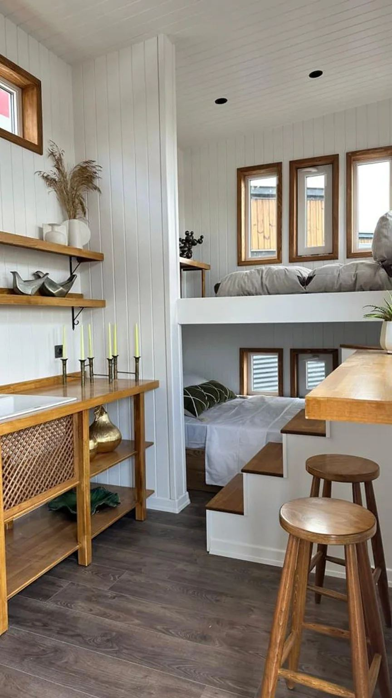</figure>
      </div>
      <div class="cap" style="margin-bottom:5mm">Merdiven içi depolama ve açık raf sistemi</div>
      <div class="g2" style="gap:5mm">
        <div><figure style="height:46mm">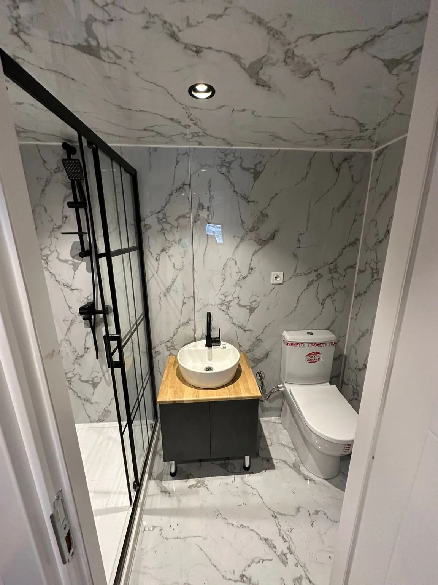</figure>
          <div class="cap">Banyo · dolap ve tezgâh</div></div>
        <div><div class="ph" style="height:46mm"><b>Görsel Alanı</b><span>Gardırop veya yürüme dolabı uygulaması</span></div>
          <div class="cap">Eklenecek</div></div>
      </div>
    </div>
  </div>
  <div class="pf"><span>Gardırop ve Depolama</span><span>06</span></div>
</div></section>

<!-- ══════════ 07 · OTEL MOBİLYASI ══════════ -->
<section class="page white"><div class="pad">
  <div style="display:grid;grid-template-columns:1fr 1fr;gap:10mm;align-items:start">
    <div>
      <div class="kicker">Ürün 03</div>
      <div class="dt stack" style="margin-top:3mm"><span class="s">Otel</span><span class="g">Mobilyası</span></div>
    </div>
    <p style="padding-top:8mm">
      Otel mobilyası iki şeyi aynı anda başarmak zorundadır: misafire iyi görünmek
      ve yıllarca yoğun kullanıma dayanmak. İkincisi malzeme ve birleşim
      detayında çözülür.
    </p>
  </div>

  <div class="hr"></div>

  <div class="split-l">
    <div>
      <div class="g2" style="gap:5mm">
        <div class="ph" style="height:66mm"><b>Görsel Alanı</b><span>Otel odası — karyola, başlık ünitesi ve gardırop</span></div>
        <div class="ph" style="height:66mm"><b>Görsel Alanı</b><span>Lobi veya resepsiyon mobilyası uygulaması</span></div>
      </div>
      <div class="cap" style="margin-bottom:5mm">Fotoğraflar eklenecek</div>
      <p>
        Tesis geneli projelerde standart bir oda takımı belirlenir ve seri üretime
        alınır. Böylece her oda birebir aynı olur, sonradan yenileme ve parça
        değişimi kolaylaşır. Suit ve özel odalar için ayrı çözüm üretilir.
      </p>
      <p>
        Oda dışında lobi, resepsiyon, restoran ve toplantı alanlarının mobilyasını
        da aynı proje kapsamında üstleniyoruz — böylece tesisin tamamında malzeme
        ve renk dili tutarlı kalıyor.
      </p>
    </div>
    <div>
      <div class="sub">Üretim Kapsamı</div>
      <ul class="ls">
        <li>Karyola, başlık ünitesi, komodin</li>
        <li>Gardırop, valiz sehpası, minibar ünitesi</li>
        <li>Çalışma masası, TV ünitesi, ayna</li>
        <li>Banyo dolabı ve tezgâh</li>
        <li>Lobi, resepsiyon, restoran mobilyası</li>
      </ul>
      <div class="blk" style="margin-top:6mm">
        <div class="kicker">Tesis projelerinde</div>
        <div style="margin-top:3mm">
          <div class="numrow" style="margin-bottom:4mm">
            <div class="numbox">01</div>
            <div><h3>Dayanıklılık</h3><p>Yoğun kullanıma uygun yüzey, darbe alan köşelerde güçlendirme.</p></div>
          </div>
          <div class="numrow" style="margin-bottom:4mm">
            <div class="numbox">02</div>
            <div><h3>Tekrarlanabilirlik</h3><p>Oda tipi başına standart takım; parça temini kolaylığı.</p></div>
          </div>
          <div class="numrow" style="margin-bottom:0">
            <div class="numbox">03</div>
            <div><h3>Etaplı montaj</h3><p>Kat kat teslim planı; işletme açık kalabilir.</p></div>
          </div>
        </div>
      </div>
    </div>
  </div>
  <div class="pf"><span>Otel Mobilyası</span><span>07</span></div>
</div></section>

<!-- ══════════ 08 · OFİS VE İŞ YERİ ══════════ -->
<section class="page tan"><div class="pad">
  <div style="display:grid;grid-template-columns:1fr 1fr;gap:10mm;align-items:start">
    <div>
      <div class="kicker">Ürün 04</div>
      <div class="dt stack" style="margin-top:3mm"><span class="g">Ofis</span><span class="s">İş Yeri</span></div>
    </div>
    <p style="padding-top:8mm">
      Ofiste mobilya seçmeden önce cevaplanması gereken soru şudur: kaç kişi, nasıl
      çalışıyor? Alan planlamasını bu soruyla başlatır, mobilyayı ardından
      belirleriz.
    </p>
  </div>

  <div class="hr"></div>

  <div class="split-l">
    <div>
      <figure style="height:64mm">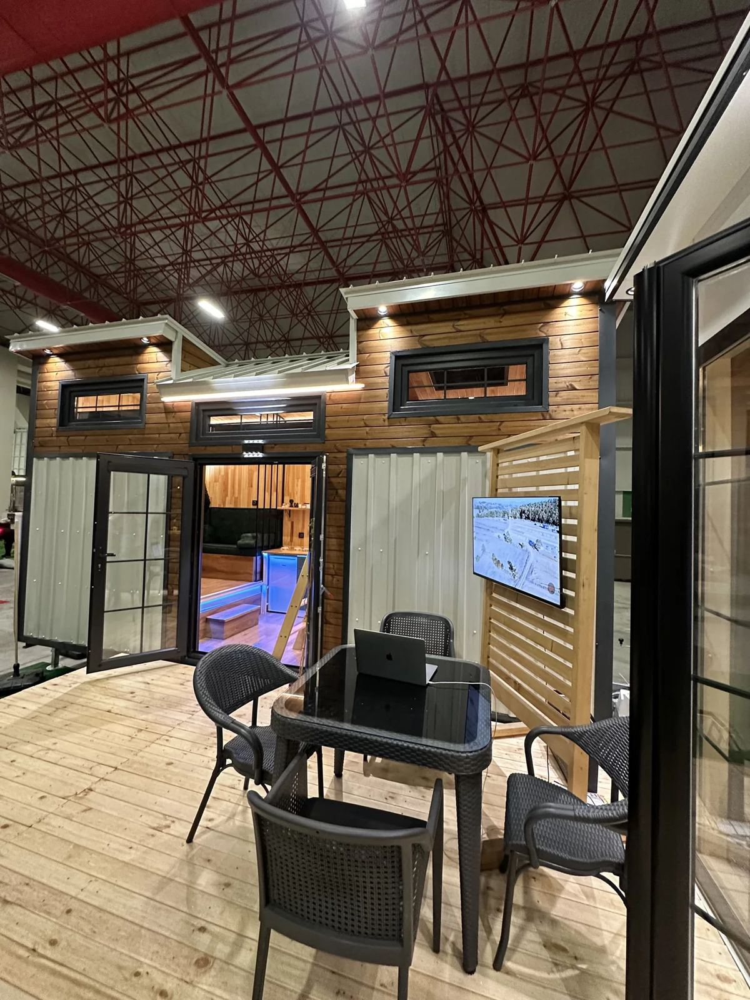</figure>
      <div class="cap">Çalışma ve toplantı alanı uygulaması</div>
      <div class="sub" style="margin-top:6mm">Ofis düzenleme</div>
      <p>
        Mevcut alanın ölçüsünü alıp yerleşim alternatifleri çıkarıyoruz: açık ofis
        mi bölmeli mi, kaç toplantı odası, sessiz çalışma alanı nerede, dolaşım
        koridorları nasıl akmalı. Karar verildikten sonra mobilya üretimine
        geçiyoruz.
      </p>
      <div class="sub" style="margin-top:5mm">İş yeri</div>
      <p>
        Mağaza, kafe ve restoranların tezgâh, raf, vitrin ve oturma birimlerini
        üretiyoruz. Perakendede raf düzeni satışı doğrudan etkilediği için ürün
        teşhir mantığını yerleşim aşamasında konuşuyoruz.
      </p>
    </div>
    <div>
      <div class="ph" style="height:56mm"><b>Görsel Alanı</b><span>Ofis düzenleme veya mağaza tezgâhı uygulaması</span></div>
      <div class="cap" style="margin-bottom:5mm">Eklenecek</div>
      <figure style="height:48mm">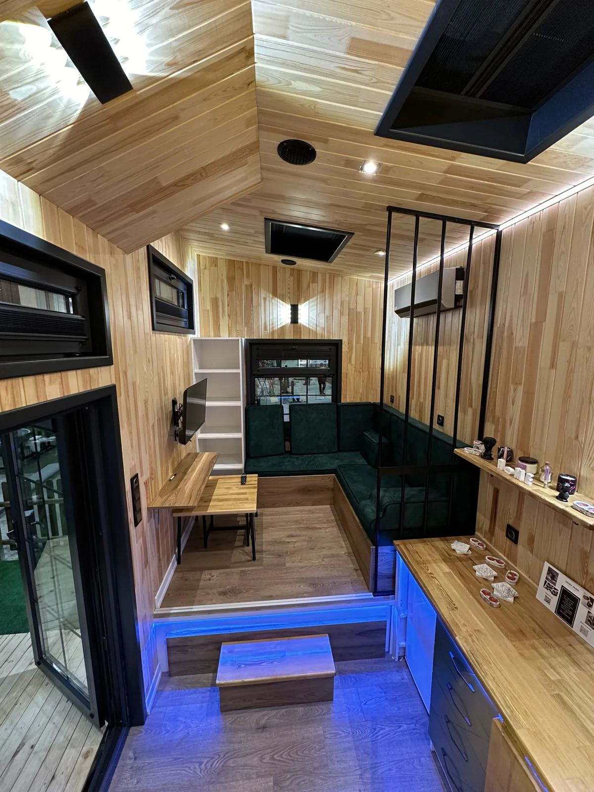</figure>
      <div class="cap">Sabit oturma birimi ve iç mekân kurgusu</div>

      <div class="blk-w" style="margin-top:6mm">
        <div class="kicker">Ofis düzenleme neyi içerir</div>
        <ul class="dot" style="margin-top:3mm">
          <li>Mevcut alanın ölçülmesi</li>
          <li>Kullanıcı sayısı ve çalışma biçimi analizi</li>
          <li>İki veya üç yerleşim alternatifi</li>
          <li>Seçilen plana göre mobilya listesi</li>
          <li>Üretim, nakliye ve montaj</li>
        </ul>
      </div>
    </div>
  </div>
  <div class="pf"><span>Ofis ve İş Yeri</span><span>08</span></div>
</div></section>

<!-- ══════════ 09 · MALZEME VE SÜREÇ ══════════ -->
<section class="page white"><div class="pad">
  <div style="display:grid;grid-template-columns:1fr 1fr;gap:10mm;align-items:start">
    <div>
      <div class="kicker">Üretim</div>
      <div class="dt stack" style="margin-top:3mm"><span class="s">Malzeme</span><span class="g">ve Süreç</span></div>
    </div>
    <p style="padding-top:8mm">
      Malzeme seçimi mekâna göre değişir. Neme maruz kalan bir banyo dolabı ile
      salondaki bir kitaplık aynı gövdeyi kaldırmaz; seçenekleri avantaj ve
      dezavantajlarıyla önünüze koyuyoruz.
    </p>
  </div>

  <div class="hr"></div>

  <div class="tl">
    <div class="it"><div class="yr">01</div><div class="dot">●</div>
      <h4>Ölçü ve Görüşme</h4><p>Yerinde ölçü alınır, ihtiyaç ve kullanım biçimi konuşulur.</p></div>
    <div class="it"><div class="yr">02</div><div class="dot">●</div>
      <h4>Çizim ve Seçim</h4><p>Yerleşim çizimi hazırlanır; malzeme, renk ve donanım seçilir.</p></div>
    <div class="it"><div class="yr">03</div><div class="dot">●</div>
      <h4>Teklif</h4><p>Kapsam, fiyat ve teslim takvimi yazılı hale gelir.</p></div>
    <div class="it"><div class="yr">04</div><div class="dot">●</div>
      <h4>Üretim</h4><p>Atölyede üretim, ardından montaj öncesi kalite kontrolü.</p></div>
    <div class="it"><div class="yr">05</div><div class="dot">●</div>
      <h4>Montaj</h4><p>Yerinde kurulum, kapak ayarları ve teslim kontrolü.</p></div>
  </div>

  <div class="split-l" style="margin-top:9mm">
    <div>
      <table>
        <tr><th>Bileşen</th><th>Kullandığımız seçenekler</th></tr>
        <tr><td class="k">Gövde</td><td>Suya dayanıklı MDF, yonga levha, kontrplak</td></tr>
        <tr><td class="k">Yüzey</td><td>Melamin, lake, ahşap kaplama, membran</td></tr>
        <tr><td class="k">Masif detay</td><td>Meşe, ceviz, kayın — kenar ve tezgâh detaylarında</td></tr>
        <tr><td class="k">Tezgâh</td><td>Kompakt lamine, ahşap, seramik, paslanmaz</td></tr>
        <tr><td class="k">Donanım</td><td>Frenli menteşe, tam açılım ray, ayarlanabilir ayak</td></tr>
        <tr><td class="k">Kenar bandı</td><td>PVC veya masif kenar; darbe alan yüzeylerde kalın bant</td></tr>
      </table>
    </div>
    <div>
      <figure style="height:50mm"></figure>
      <div class="cap">İşçilik detayı · birleşim ve yüzey kalitesi</div>
      <div class="blk" style="margin-top:5mm">
        <div class="kicker">Kontrol noktaları</div>
        <ul class="dot" style="margin-top:2.5mm">
          <li>Gövde ölçü ve gönye kontrolü</li>
          <li>Kapak arası boşluk ve hizalama</li>
          <li>Çekmece açılım ve kapanış testi</li>
          <li>Yüzey ve kenar bandı kontrolü</li>
          <li>Montaj sonrası son ayar turu</li>
        </ul>
      </div>
    </div>
  </div>
  <div class="pf"><span>Malzeme ve Süreç</span><span>09</span></div>
</div></section>

<!-- ══════════ 10 · İLETİŞİM ══════════ -->
<section class="page white"><div class="pad" style="display:flex;flex-direction:column">
  <div style="height:96mm;display:grid;grid-template-columns:1.4fr 1fr;gap:4mm">
    <figure>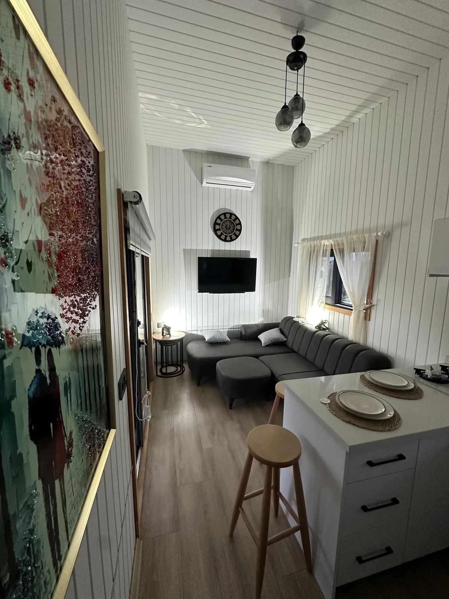</figure>
    <figure></figure>
  </div>

  <div style="flex:1;display:flex;flex-direction:column;justify-content:center;text-align:center">
    <div class="dt big" style="font-size:40pt"><span style="color:var(--ink)">İletişim</span> <span class="g">Kurun</span></div>
    <p style="max-width:118mm;margin:6mm auto 0">
      Mekânınızı anlatın; ölçüyü birlikte alalım. Mobilya üretimi yapı işi
      olmadan da verdiğimiz bağımsız bir hizmettir.
    </p>
    <div style="height:1px;background:var(--ink);margin:8mm 0 7mm"></div>
    <div class="g3" style="gap:8mm">
      <div>
        <div class="kicker">Telefon</div>
        <div style="font-size:11pt;font-weight:700;margin-top:2.5mm">+90 546 655 70 70</div>
      </div>
      <div>
        <div class="kicker">E-posta</div>
        <div style="font-size:9pt;font-weight:700;margin-top:2.5mm">info@globalinvestment.com.tr</div>
      </div>
      <div>
        <div class="kicker">Web</div>
        <div style="font-size:10pt;font-weight:700;margin-top:2.5mm">globalyapicelik.net</div>
      </div>
    </div>
  </div>

  <div style="display:flex;justify-content:space-between;font-size:6.6pt;letter-spacing:.20em;text-transform:uppercase;color:var(--muted);border-top:1px solid var(--line);padding-top:3mm">
    <span>Global Yapı Geliştirme A.Ş.</span>
    <span>İç Mekân ve Ahşap Mobilya · 2026</span>
  </div>
</div></section>
